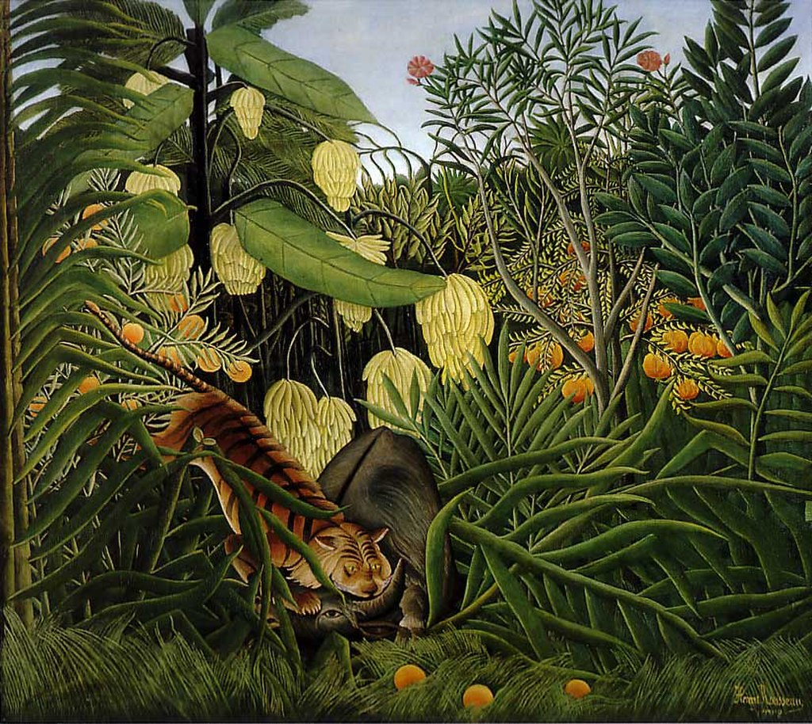

<head>
<meta charset="UTF-8" />
<meta name="keywords" content="drawing, painting" />
<meta name="description" content="drawings by Sunjy" />
<title>Sunjy</title>
<link rel="shortcut icon" type="image/x-icon" href="../../mImages/mCommon/favicon.ico" media="screen" />
<link rel="stylesheet" type="text/css" href="../../mCsses/mCommon/mCssA.css" />
<link rel="stylesheet" type="text/css" href="../../mCsses/mCommon/mCssB.css" />
<link rel="stylesheet" type="text/css" href="../../mCsses/mCommon/mCssC.css" />
<link rel="stylesheet" type="text/css" href="../../mCsses/mCommon/mCssD.css" />
<link rel="stylesheet" type="text/css" href="../../mCsses/mContent/mCssA.css" />
<link rel="stylesheet" type="text/css" href="../../mCsses/mContent/mCssB.css" />
<link rel="stylesheet" type="text/css" href="../../mCsses/mContent/mCssC.css" />
<link rel="stylesheet" type="text/css" href="../../mCsses/mContent/mCssD.css" />
</head>
<script type="text/javascript" src="../../mScripts/mContent/mContentAA.js" /></script>
<script type="text/javascript" src="../../mScripts/mContent/mContentAB.js" /></script>
<script type="text/javascript" src="../../mScripts/mContent/mContentAC.js" /></script>
<script type="text/javascript" src="../../mScripts/mContent/mContentAD.js" /></script>
<script type="text/javascript"></script> 
<script type="text/javascript">
document.write('<div class="mImgAbsolute"></div>');
/*
document.write('<p class="mFontSizeBColor" />From a white paper...</p>');
document.write('<table class="center"><tr><td>');
document.write('');
document.write('</td></tr></table>');
*/
</script>


<script type="text/javascript">
document.write('<p class="mFontSizeBColor" />Combat of a Tiger and a Buffalo</p>');
document.write('<p class="mFontSizeSColor" />“Combat of a Tiger and a Buffalo” by Henri Rousseau is a highly stylized and unique depiction of simplified images of animals and nature painted in flat, bright colors.<br><br>Rousseau’s imaginative visions and the technique of painting was unique. He applied one layer at a time, creating multiple layers, and he carefully blended his brushstrokes to create a smooth surface.<br><br>Henri Rousseau’s inspiration came from illustrations in children’s books and botanical gardens as well as tableaux of wild taxidermy animals in Paris’s museums of Natural History.<br><br>Henri Rousseau frequently visited the Jardin des Plantes for inspiration. he is quoted as saying:<br><br>“When I go into the glasshouses, and I see the strange plants of exotic lands, it seems to me that I enter into a dream.”<br><br>The Jardin des Plantes (French for “Garden of the Plants”) is the central botanical garden in France. The Jardin des Plantes maintain a botanical school, with thousands of plants arranged by family on one hectare (10,000 m²) plot.<br><br>Three hectares are devoted to horticultural displays of decorative plants. An Alpine garden has species with worldwide representation.<br><br>Specialized buildings, such as the winter garden, and Mexican and Australian hothouses display regional plants, not native to France.<br></p>');
document.write('<table class="center" /><tr><td>');
document.write('<br>Rousseau’s imaginative visions and the technique of painting was unique. He applied one layer at a time, creating multiple layers, and he carefully blended his brushstrokes to create a smooth surface.<br><br>Henri Rousseau’s inspiration came from illustrations in children’s books and botanical gardens as well as tableaux of wild taxidermy animals in Paris’s museums of Natural History.<br><br>Henri Rousseau frequently visited the Jardin des Plantes for inspiration. he is quoted as saying:<br><br>“When I go into the glasshouses, and I see the strange plants of exotic lands, it seems to me that I enter into a dream.”<br><br>The Jardin des Plantes (French for “Garden of the Plants”) is the central botanical garden in France. The Jardin des Plantes maintain a botanical school, with thousands of plants arranged by family on one hectare (10,000 m²) plot.<br><br>Three hectares are devoted to horticultural displays of decorative plants. An Alpine garden has species with worldwide representation.<br><br>Specialized buildings, such as the winter garden, and Mexican and Australian hothouses display regional plants, not native to France.<br>" />');
document.write('</td></tr></table>');
</script>


